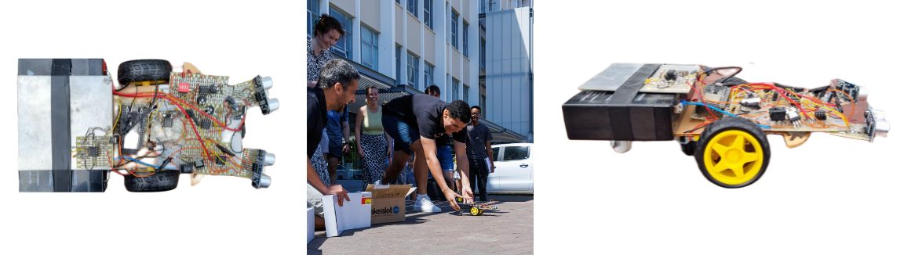

Object avoiding RC car
In the E-design 344 module at the University of Stellenbosch, I completed a challenging solo project to design, build and report on a battery-driven remote-controlled car with collision avoidance capabilities.
The main goal of the project was to demonstrate the difference in designing using analogue methods vs digital methods. The left wheel was controlled digitally whereas the right wheel was controlled by analogue. The vehicle is propelled by two DC motors and has a swiveling castor for balance, while torque instructions are issued through a joystick on a wireless remote control. The system includes two ultrasonic sensors (one per wheel) for collision avoidance, as well as an analogue accelerometer to measure and characterize the forces acting on the vehicle. Telemetry readings are remotely communicated to a PC using a wireless Bluetooth link and uploaded to an online platform (ThingSpeak) through wireless (WiFi) communications. A lead-acid battery supplies power to the entire system. A battery charger and undervoltage protection was also implemented.
Weekly incremental assignments required me to perform a literature survey, design a circuit with consideration of requirements, simulate the circuit, build the physical circuit, demonstrate functionality, and document all of the previous in a report. This project required a deep understanding of circuit design, analogue and digital control, sensing, and wireless communication technologies, and was completed independently.
If you are interested in the detail design, testing and results process you can find the report of this project on GitHub here
Below is a short video of the car in action:
- © Untitled. All rights reserved
- Design: HTML5 UP